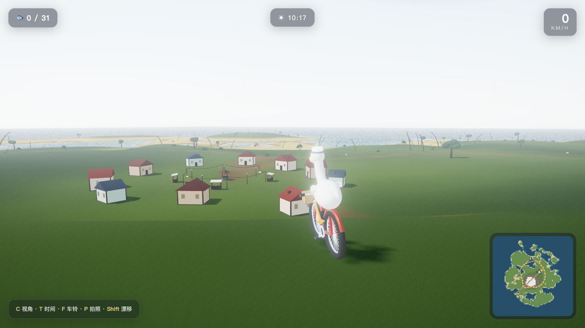
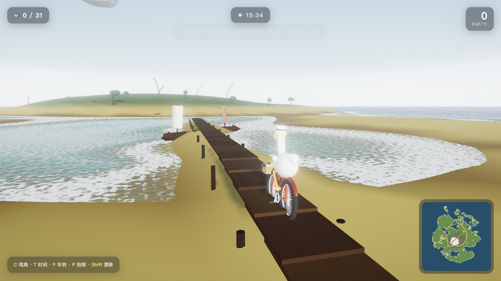
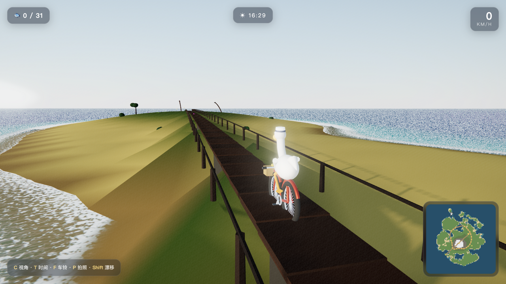
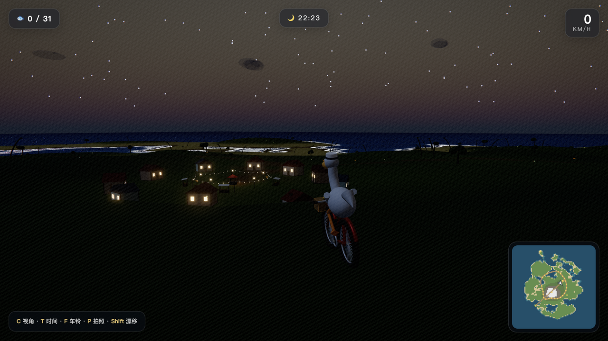

去年大家让 AI "画鹈鹕骑自行车"，比的是谁画得对。这次换了个问法：能不能造一个世界，让那只鹈鹕真的骑上去？
答案是一座半径约一公里的程序化热带岛屿——《鹈鹕环岛记》。一只戴水手帽的鹈鹕，骑一辆红色自行车：环岛公路串起渔火村、灯塔海角、雪山主峰、观海栈桥与跨海大桥，317 米的桥直通离岛「鹈鹕岩」；15 分钟一整天的昼夜循环，入夜渔火村的窗火渐亮、灯塔光束开始旋转；沿途 40 条金色小鱼等它收集，车筐真的会装满。
▶️ 现在就能玩（在线版）：bayshier.github.io/pelican-isle —— 桌面浏览器打开即玩，W 骑行、T 加速时间看日落。
老规矩先交代底线：整个游戏没有用一个模型、贴图、音频文件——约 2800 行 Three.js 手写代码，几何、颜色、水面、天空、乃至风声浪声车铃声，全部实时生成。




还有雪山主峰的观景台、山岗上的三台风力发电机、两只热气球、海鸥编队与夜间萤火虫。仓库里有完整的 按键操作表——包括我的最爱：按 T 把时间调到 40×，停在山腰看整座岛在 20 秒内走完黄昏。
和前作最相关的呼应是「骑」。上次横评里 glm-4.7-flash 因为把踏板装在后轮轴上、鹈鹕腿悬空被挂在点评栏；这次腿和踏板的位置不再靠摆坐标——每帧解一次双骨 IK：踏板位置由曲柄角解析算出，膝关节用平面圆交求出，大腿小腿两根骨骼各自朝目标摆放。
于是鹈鹕是真的在蹬：加速时踏频变快，压弯时人和车一起倾，水手帽在颠簸中颤。前作文生图冠军 qwen-image 给鹈鹕穿小皮鞋拿过「题意天花板」，这次它戴上了水手帽，翅膀一直搭在车把上，过弯还会用身体配重。
整座岛是一个纯函数 terrainHeight(x, z)：simplex 噪声域扭曲海岸线、主峰与离岛高斯隆起、村庄台地、连 317 米跨海大桥的桥面都直接写进高度场。地形网格、植被散布、建筑地基、骑行物理、海面泡沫——全部调同一个函数。好处是万物天然贴合：车轮贴地、桥面可骑、泡沫恰好出现在海岸线上。
15 分钟走完一天，听起来要写一套天气系统，实际是按太阳高度角插值的 5 个配色关键帧同时驱动雾色、水面三色、太阳颜色和半球光。黄昏时分整座岛自动变成金色——不是做了"黄昏特效"，是所有颜色都在同一份插值里。
后期第一版把 UnrealBloom 阈值设成 0.85，结果白墙和白鹈鹕辐射度超标，整幅画面像蒙了层雾。调到 1.15，世界立刻清爽。线性空间里"过曝"的定义和直觉不一样——这是本次开发最贵的一课，五分钟调好，半小时才想明白为什么。
仓库里的 REBUILD_SPEC.md 把整座岛拆成可交付的 9 个模块（地形→海面→天空→植被→建筑→角色→后期→玩法→主循环），附一份可直接投喂给任何模型的复刻提示词（附录 A），和三个最容易翻车的坑：
想考考你的模型，不用从零写题面了——clone 下来，让 AI 对着规格书造一座你自己的岛。